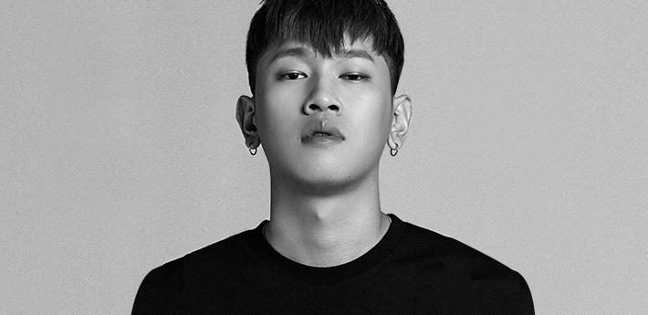

Crush는 중학교 1학년 때부터 흑인음악에 입문하기 시작해 혼자 독학으로 작사, 작곡을 공부했다고 한다.[5] 2012년에 치타와 '마스터피스'라는 혼성 그룹으로 데뷔했으나 아무도 모르게 그냥 묻혔다. 그 후 공연을 위해 그랜드라인파티에 갔다가 Zion.T를 만나면서[6] VV:D 크루[7]에 가입하게 되었고 곧 아메바 컬처에도 들어가게 되었다.[8] [9]솔로 데뷔 전까지 Zion.T나 슈프림팀, 사이먼 도미닉, 다이나믹 듀오의 앨범에 참여를 하며 주목을 받았다. 그중 대표적인 곡으로는 DJ Friz와 함께 피처링한 다이나믹 듀오의 '거품 안 넘치게 따라줘', Zion.T의 '뻔한 멜로디', 슈프림팀의 '그대로 있어도 돼' 같은 곡들이 있다.
